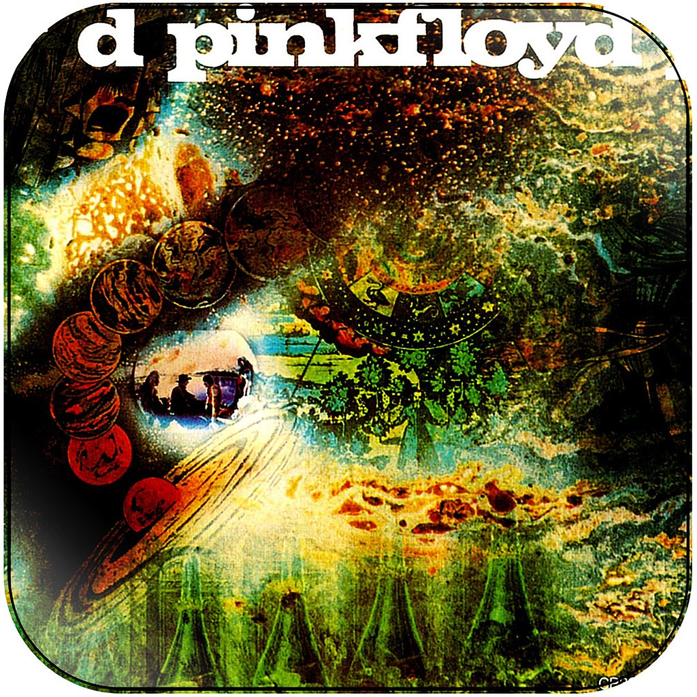
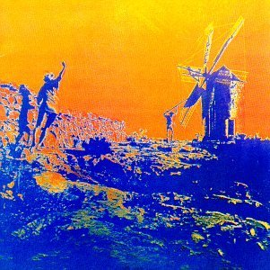
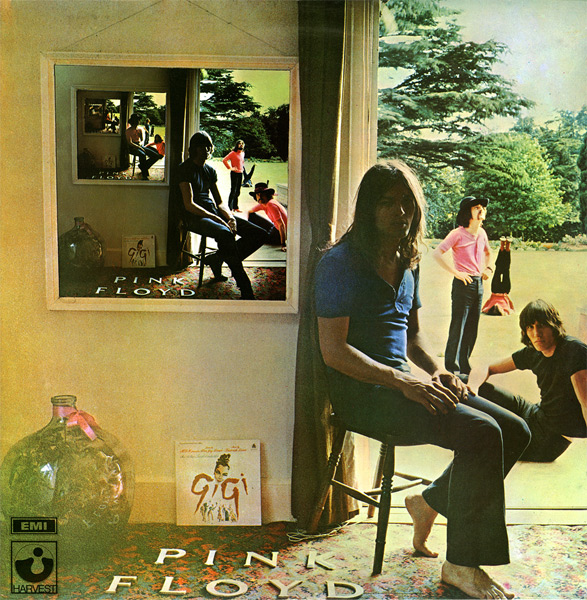

The Piper at the Gates of Dawn (1967)
- Astronomy Domine
- Lucifer Sam
- Matilda Mother
- Flaming
- Pow R. Toc H.
- Take Up Thy Stethoscope and Walk
- Interstellar Overdrive
- The Gnome
- Chapter 24
- The Scarecrow
- Bike

- Let There Be More Light
- Remember a Day
- Set the Controls for the Heart of the Sun
- Corporal Clegg
- A Saucerful of Secrets
- See-Saw
- Jugband Blues

Music from the Film More (1969)
- Cirrus Minor
- The Nile Song
- Crying Song
- Up the Khyber
- Green is the Colour
- Cymbaline
- Party Sequence
- Main Theme
- Ibiza Bar
- More Blues
- Quicksilver
- A Spanish Piece
- Dramatic Theme

- Astronomy Domine
- Careful with That Axe, Eugene
- Set the Controls for the Heart of the Sun
- A Saucerful of Secrets
- Sysyphus: Part 1
- Sysyphus: Part 2
- Sysyphus: Part 3
- Sysyphus: Part 4
- Grantchester Meadows
- Several Species of Small Furry Animals Gathered Together in a Cave and Grooving with a Pict
- The Narrow Way Part 1
- The Narrow Way Part 2
- The Narrow Way Part 3
- The Grand Vizier’s Garden Party: Part 1 (Entrance)
- The Grand Vizier’s Garden Party: Part 2 (Entertainment)
- The Grand Vizier’s Garden Party: Part 3 (Exit)